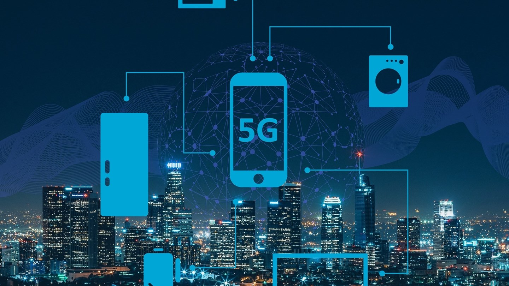

Jaringan 5G di Indonesia 2023, Tersedia di Beberapa Kota

Jaringan seluler terus mengalami perkembangan seiring dengan proliferasi
inovasi IoT. setelah jaringan 1G, 2G, 3G, dan 4G, kini muncul jaringan
5G di berbagai negara, termasuk Indonesia. Kendati demikian, belum semua
wilayah terjangkau internet 5G. Seperti dengan empat jaringan seluler
sebelumnya, butuh waktu untuk 5G bisa merata di seantero negeri.
Jaringan 5G lebih cepat dan memberikan lebih banyak keuntungan bagi para
pengguna. Tidak heran, banyak konsumen memburu perangkat seluler yang
mendukung koneksi 5G. Hal ini membuat banyak merek smartphone
berlomba-lomba memasarkan produk yang mampu menangkap jaringan 5G pula.
Memiliki perangkat yang mendukung jaringan 5G menjadi penting untuk
mengantisipasi pemerataan 5G di seluruh pelosok Indonesia. Bagi kamu
yang penasaran bagaimana kondisi persebaran jaringan 5G di Indonesia,
yuk simak artikel ini sampai akhir!
5G adalah jaringan seluler generasi kelima. Ia menjadi standar wireless
global termutakhir setelah jaringan 1G, 2G, 3G, dan 4G. 5G merupakan
representasi jaringan baru yang dirancang untuk menghubungkan hampir
semua orang dan segala sesuatu bersama-sama termasuk mesin, objek, dan
perangkat. Teknologi jaringan seluler 5G memberikan kecepatan data
puncak multi-Gbps (billions of bits per second) yang lebih tinggi dan
dibarengi tingkat latensi sangat rendah. Dengan begitu, internet 5G jauh
lebih bisa diandalkan karena memiliki kapasitas jaringan masif.
Ia memberikan pengalaman pengguna yang lebih seragam, empoweringss
pengguna baru, serta menghubungkan industri-industri kontemporer. Bagi
masyarakat umum, jaringan internet 5G berpotensi besar untuk
meningkatkan cara kita menggunakan internet dalam kehidupan sehari-hari.
Ia membuat sejumlah aktivitas seperti panggilan video, streaming,
gaming, dan mengunduh berkas berukuran besar semakin cepat dan mulus.